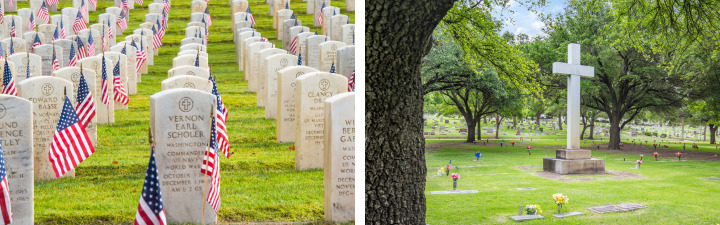
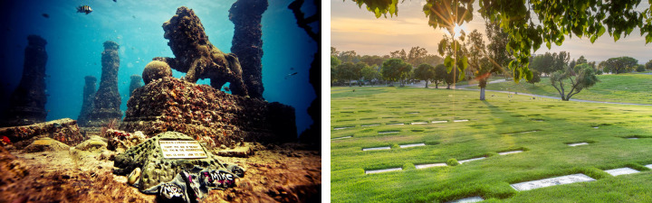
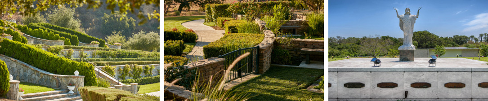
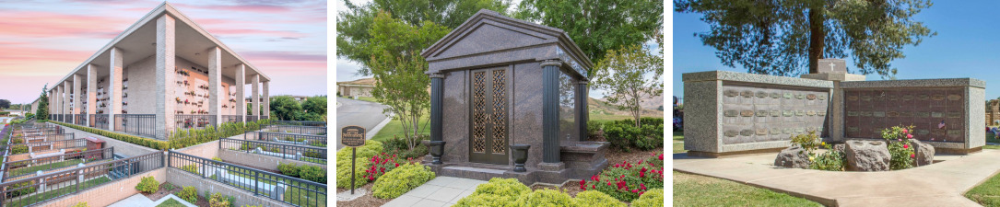
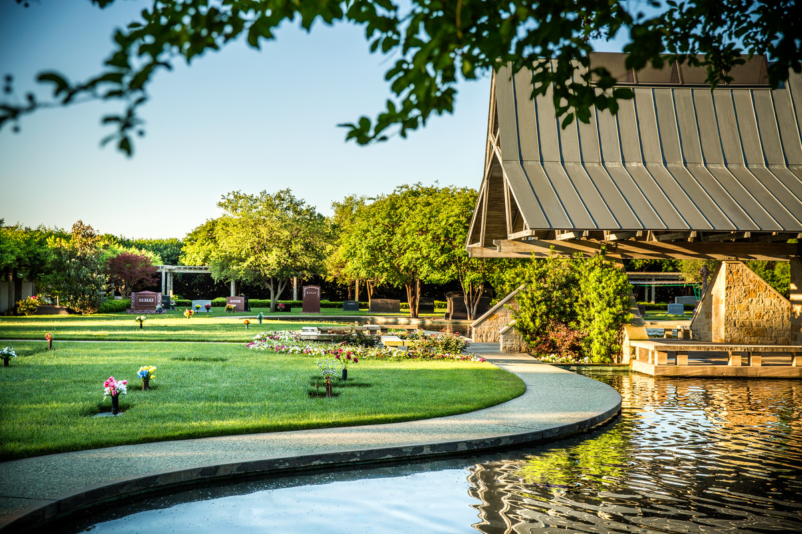

Whether you choose an in-ground burial, aboveground entombment or cremation option, cemeteries and memorial parks are serene spaces family and friends can visit to remember and reflect on their loved one's lives. Dignity Memorial® cemeteries offer a wide variety of property options—from private family estates and individual burial plots to lawn crypts, mausoleum crypts, cremation niches and scattering gardens.
Our compassionate advisors are here to help you select an option that honors your personal wishes, family traditions and cultural preferences. They can also assist you in choosing a marker or monument that helps tell a life story.
Learn what you need to know to choose the best provider for your family's needs.
Different types of cemeteries and memorial parks offer different options, and each cemetery has unique features to consider. Personally touring a cemetery and understanding what's available can help you choose the best fit for yourself, your loved one or your family.
Though it may be privately owned or managed by a religious organization, municipality or government entity, a cemetery is considered public if it's available to a broad section of the community. Public cemeteries serve neighborhoods, churches or entire towns, offering families the opportunity to create lasting memorials for individual loved ones or their whole clan. All Dignity Memorial cemeteries are public, ensuring that any family can find a meaningful space to honor and remember those they've lost.
A cemetery is considered private when it serves only a family or a select group, with property not available for public purchase. Often located on private property, private burial grounds are typically managed by a family, offering a very personal and intimate final resting place for loved ones. Private cemeteries reflect a family's desire for exclusivity and privacy, creating a space that is uniquely their own for honoring their heritage and legacy.
If you or a loved one is a veteran, you may be interested in being laid to rest in a veterans cemetery. Exclusively for eligible members of the armed forces and their families, veterans cemeteries are run either on the state or tribal level by local governments or on the national level by federal government organizations like the U.S. Department of Veterans Affairs National Cemetery Administration or the Department of the Army. Burial services often involve military funeral honors, and government funding may be available to you or a loved one, depending on your situation.
Reserved for members of a specific religious community, a religious cemetery is often owned, operated or managed by a church, religious society or denomination. This type of cemetery is usually dedicated as sacred or blessed (consecrated). It may have specific guidelines around how a loved one may be laid to rest. A religious cemetery may be a good fit if you want a final resting place specific to your faith or if your loved one was active in their church or temple and wants to be memorialized in a cemetery that reflects their devotion.
Green cemeteries represent a shift toward more sustainable end-of-life practices, offering alternatives to traditional burial methods and focusing on minimizing environmental impact and preserving natural beauty. This type of cemetery usually centers around natural burials that forego the use of embalming chemicals, metal caskets or concrete vaults and instead use biodegradable urns and caskets, containers or shrouds. They may be part of a conservation effort in which natural habitats are cultivated and ground maintenance is minimal. Families who choose green cemeteries do so for their simplicity and connection to nature. A green cemetery may be a standalone burial ground solely dedicated to green burial practices or a special section of a traditional cemetery.
After cremation, many families create permanent memorials where they can visit and reflect on the lives of their loved ones. Neptune Memorial Reef® is an underwater cemetery off the east coast of Florida, beneath the surface of the Atlantic. Families who choose underwater memorialization have a couple of options. A professional team scatters a loved one's ashes in open water at the site of the reef, and a certified diver places a copper cenotaph on the reef. Or a loved one's ashes are blended with a sturdy substance that is artistically sculpted or molded and placed in the artificial barrier reef that is home to tens of thousands of animals. Families can take their own boats to visit the reef or join up with one of the professional scuba operations that go to the reef weekly.
Whether public, private, veterans or religious, most cemeteries are traditional cemeteries. There, loved ones are laid to rest in the ground and above it. Traditional cemeteries include burial gardens and mausoleums. They may also include cremation options, veterans gardens, religious sections, gardens for children, pet cemeteries and more. They are serene spaces for people to visit and remember and honor their loved ones.
Not all cemeteries offer all options. If you're interested in a particular option, be sure to ask your Dignity Memorial provider.
There is a difference between a cemetery and a memorial garden or memorial park, though the terms are often used interchangeably.
Cemetery is a general term for any place where loved ones are buried. Cemeteries tend to have upright headstones and grave markers. They tend to have a traditional, established look and feel.
Memorial gardens or memorial parks tend to have more modern features. They often emphasize the natural environment. Memorial parks usually have flat markers instead of upright headstones to maintain a more streamlined, open landscape. This allows for more green space, trees, flowers and pathways, giving it the feel of a garden or park.
In-ground burial offers families a meaningful, permanent way to honor their loved ones. This option includes plots marked by headstones and grave markers commemorating those who are interred there, either in a casket or an urn.
In-ground casket burial or urn burial plot is a traditional choice. Plots for caskets are much larger than plots for urns. Depending on the cemetery, a plot can be single depth (deep enough for one casket or urn) or double depth (deep enough for two). Double-depth plots are good options for couples or family members who wish to be buried together.
Private estates include gated estates and hedge estates for in-ground casket or urn burial. A gated estate is like a private cemetery within a cemetery. Typically, more than one person can be buried there, and the property is sectioned off with a wall or fence. Similarly, hedgerows indicate the perimeter of a hedge estate. A private estate is a good choice for a family who wants to be buried together. Casketed burials and cremation options are frequently mixed in private estates.
An affordable option for both casket and urn burial, lawn crypts are underground burial spaces that combine the benefits of ground burial with some of the advantages of a mausoleum. Lawn crypts have preinstalled outer burial containers that not only save on costs but also ensure that the ground above the grave remains level over time, maintaining the cemetery's aesthetics. Many lawn crypts are designed for two burials, allowing couples or family members to be buried together in the same space.
Urn gardens are areas in cemeteries designed for urn burial. They are usually landscaped with flowers and trees, and they may feature aboveground cremation options, such as benches, boulders, pedestals and columbaria.
Most of us are familiar with burial, but what is aboveground entombment? This option involves placing a loved one in a sealed crypt or niche within a mausoleum or columbarium. You or a loved one might select aboveground entombment based on personal preferences, cultural and religious beliefs and geographical limitations. There are various choices, including private spaces or community options, all of which can be personalized to honor a loved one.
Community mausoleums are typically built with granite, and they are sometimes very large and stately structures. A garden mausoleum has only outdoor crypts. An indoor mausoleum is a climate-controlled building that's comfortable for visitors even in very hot or very cold weather. Depending on the mausoleum, choices can include single spaces, side-by-side spaces and companion configurations.
Private mausoleums are exclusive, custom-built, aboveground spaces usually for a prominent individual, couple or family. The person or family building the mausoleum works with a designer to customize the architecture of the structure as well as features such as bronze doors or stained-glass windows. These exclusive mausoleums can be built to hold caskets, urns or both.
A columbarium is a room or structure designed to house ashes. Columbaria are permanent memorials with banks of cremation niches (similar to cubbyholes but with secure fronts). A columbarium can be large or small, private or public. Some columbaria have glass-front niches, which allow visitors to see a loved one's urn and personal artifacts stored with it. Other columbaria have granite-front niches that can be engraved or memorialized with a plaque. Some columbaria have both.
Personalized tributes such as cremation pedestals, benches and boulders provide lasting memorials for future generations to visit, reflect and remember. Typically made of granite, bronze or marble, pedestals and benches can be inscribed with names, dates, messages, mottoes, verses and more. Similarly, pedestals may mark where ashes are buried or they may hold urns inside. Cremation boulders offer the same personalization while blending in with the natural environment.
The cost of cemetery property varies depending on the location of the cemetery, the type of property, the location within the cemetery and the level of customization. Custom-built memorials, such as personalized tributes in granite, bronze or marble, may cost tens or hundreds of thousands. A place in a community mausoleum or a burial plot simply marked are more affordable options.
If you wish to learn more about cemetery property options and what may fit your budget and needs, a Dignity Memorial professional can answer your questions and show you available properties.
A plan for end-of-life arrangements goes beyond choosing and paying for cemetery property. Pre-planning ensures your wishes are honored and removes pressure on your loved ones to make decisions on your behalf. It also allows you to prepay for a funeral, cremation or celebration of life.
Prepayment guards against rising costs by locking in today's prices on many items, and it relieves your family of a financial burden at the time of a loss. A Dignity Memorial funeral provider can guide you through the process of creating and documenting a detailed plan, giving you and your family peace of mind.
Many people don't realize the significance of choosing a final resting place. It is an important step in creating a family legacy, establishing a place of remembrance for future generations and paying tribute to a special life. Your Dignity Memorial professionals are here to help.
Get your free Buyer's Guide to Cemetery Property today.
* indicates a required field
We will never sell your information or use it for any purpose except official Dignity Memorial correspondence. See our privacy policy.